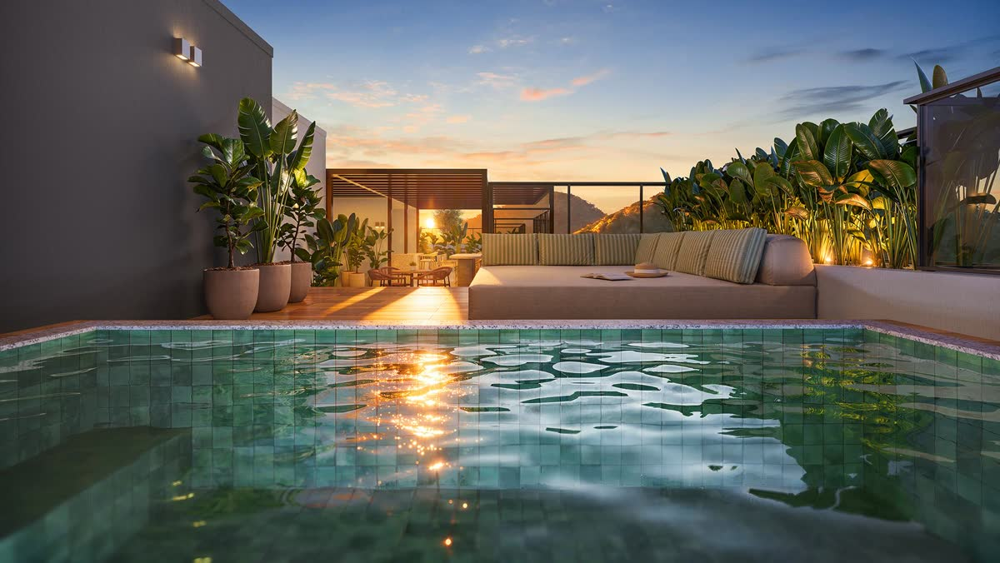
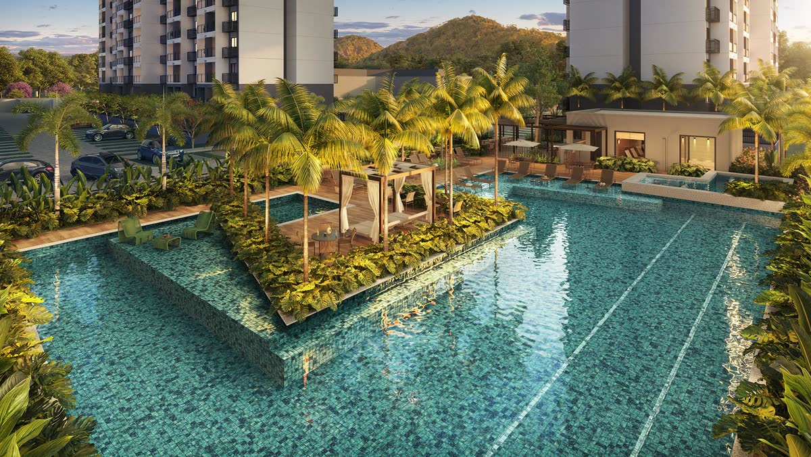
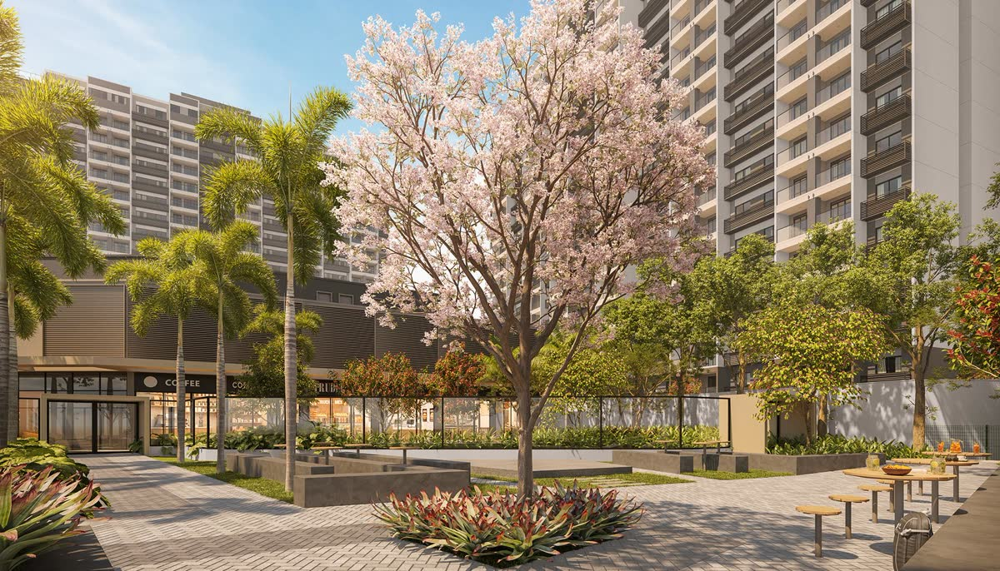
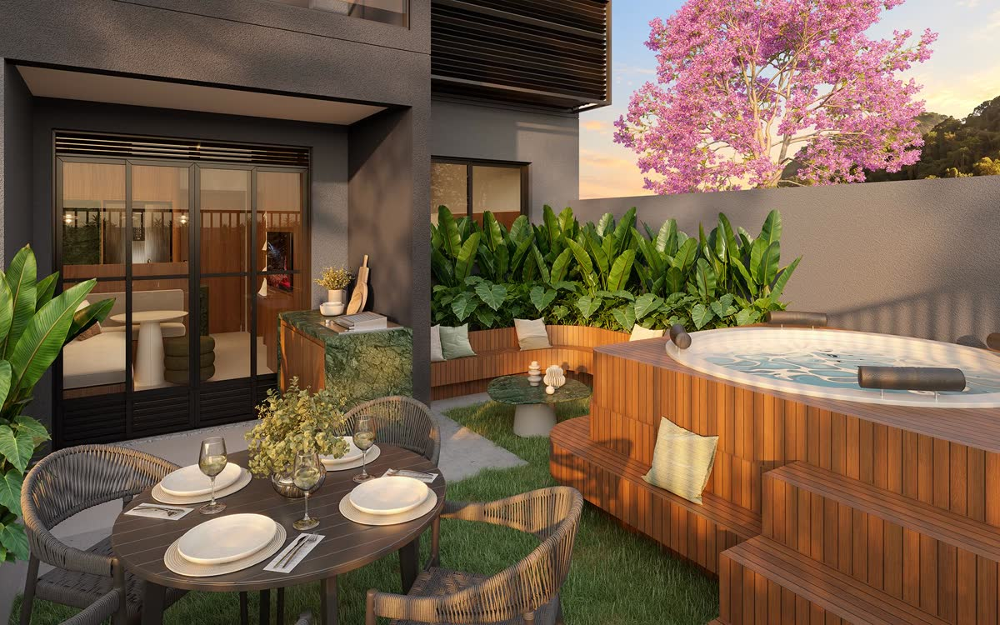
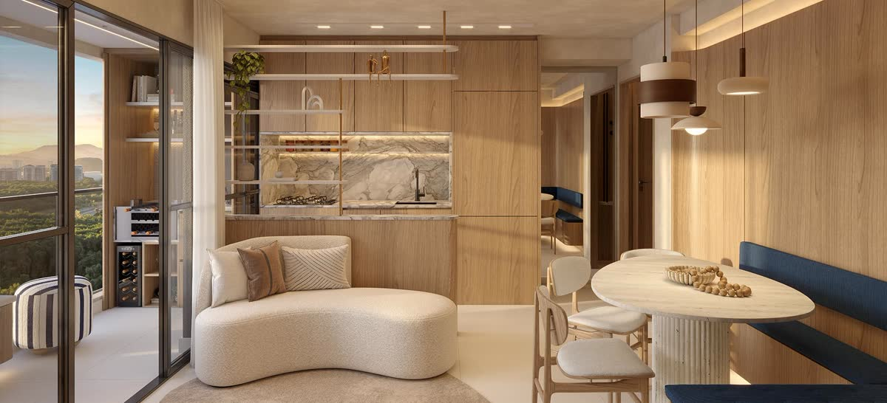
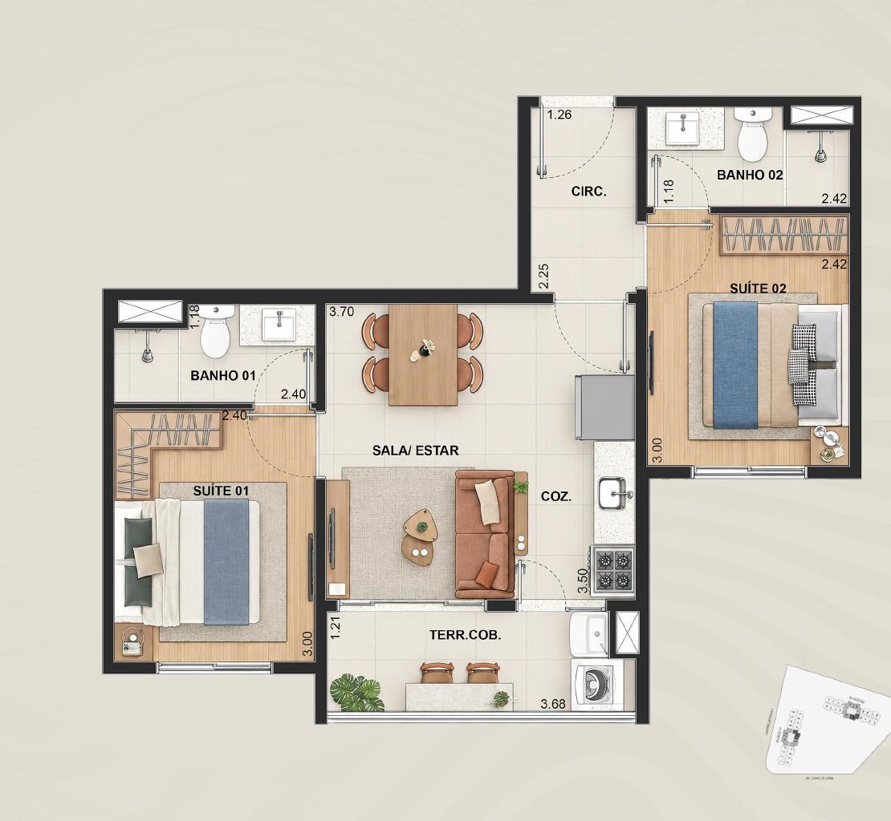
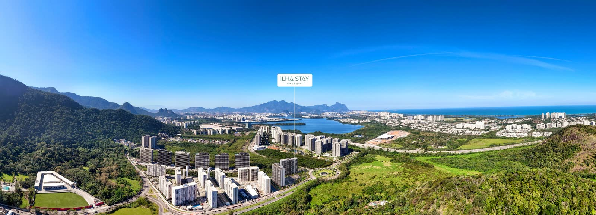

Apartamentos de 28 a 70 m², pensados para hospedar e investir, com rooftop de vista 360°, lazer de resort e mall integrado, ao lado do Parque Ilha Pura.
*Tabela direta de referência, sujeita a alteração e disponibilidade. Empreendimento em pré-lançamento: só poderá ser comercializado após o registro de incorporação no cartório de registro de imóveis. Imagens meramente ilustrativas.
A Barra Olímpica concentra alguns dos maiores polos de eventos do país, com agenda o ano inteiro, o que movimenta a procura por imóveis de temporada, segundo a incorporadora. O Ilha Stay nasce nesse endereço, com estrutura de hotelaria.
Sala e quarto de 28 m² a partir de R$ 330 mil*, para começar a investir em um bairro em expansão.
Lavanderia, mini mercado, coworking, spa e fechadura eletrônica nas unidades.
11 lojas dentro do condomínio, com conveniência na porta de casa.
A Lobie, operadora de locação por temporada, é parceira do empreendimento para quem quiser gestão completa.
*Informações de mercado e de retorno têm caráter meramente informativo e não garantem desempenho futuro. Regras de uso e de locação dependem da convenção do condomínio: confirme com a corretora.





Imagens meramente ilustrativas, sujeitas a alteração.

Double suíte 47 m² A partir de R$ 550.000**Valores da tabela direta de referência, sujeitos a alteração e disponibilidade até o lançamento comercial. Plantas e metragens podem sofrer alterações.
Do sala e quarto à double suíte, são plantas compactas, com varanda, para quem quer morar com praticidade num bairro com mobilidade, escolas, saúde e comércio por perto.
BRT Olof Palme (1 min) · Transolímpica / Linha Amarela (5 min) · Metrô Jardim Oceânico, Linha 4 (10 min).
Shopping Metropolitano (7 min) · Barra Shopping (15 min) · Village Mall (15 min) · Parque Olímpico na região.
Colégio PH Ilha Pura (2 min) · Alfa CEM Bilíngue, Arena Olímpica (8 min) · Santo Agostinho Barra (10 min).
Hospital Rio Barra (5 min) · Barra Medical Center (10 min) · Hospital Barra D'Or (15 min).
*Tempos aproximados de carro, segundo a Riva Incorporadora. Endereço informado pela Riva: Praça Professora Heley Batista, s/n, Barra Olímpica, Rio de Janeiro.

Um toque no WhatsApp e você recebe plantas e informações do Ilha Stay.
Ela mostra entrada, parcelas e financiamento para o seu caso, assim que as condições forem liberadas.
Sem pressão e sem custo para você: a comissão é paga pela incorporadora.
Corretora credenciada da Riva Incorporadora, do Grupo Direcional. Ela acompanha você da primeira conversa até a entrega das chaves.
Quero me cadastrarAinda não. O empreendimento está em pré-lançamento e só poderá ser comercializado após o registro de incorporação no cartório de registro de imóveis. A Crisla cadastra você para receber plantas e condições assim que forem liberadas.
Pela tabela direta de referência, a sala e quarto de 28 m² parte de R$ 330.000 e a double suíte de 47 m² de R$ 550.000. Os gardens são sob consulta. Os valores podem mudar até o lançamento comercial.
O projeto foi pensado para hospedar e investir, com a Lobie como parceira de gestão. As regras de uso e de locação estão na convenção do condomínio, e a Crisla confirma os detalhes com você antes de qualquer decisão.
A tabela é direta, com sinal, parcelas durante a obra e saldo financiado na entrega. A Crisla faz uma simulação personalizada, sem custo, assim que as condições forem liberadas.
Na Barra Olímpica, no Rio de Janeiro, em frente ao Parque Ilha Pura, a cerca de 10 minutos da praia, 1 minuto do BRT Olof Palme e 5 minutos da Linha Amarela e da Transolímpica.
Não. O valor do imóvel é o mesmo comprando direto com a incorporadora ou com uma corretora credenciada. A comissão é paga pela incorporadora.
Ainda comparando regiões?
Ver os outros lançamentos da Riva no Rio →